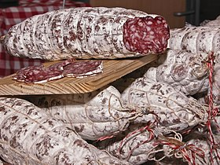

Le rosette (au masculin, par ellipse de « saucisson rosette ») est un type de saucisson sec, à base de viande et de gras de porc, originaire de la région lyonnaise. C'est le plus connu des saucissons de cette région classé par la DGCCRF comme « Charcuterie sèche de qualité supérieure »
